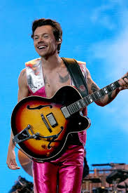

Mide 1, 83
Harry (Holmes Chapel, Cheshire, Inglaterra) nació el 1 de febreo de 1994. Es un cantante, compositor y actor británico. Inició su carrera en 2010 como integrante de One Direction, grabando un total de 5 albumes y luego anunciaron un descanso indefinido. Harry inició su carrera como solista con la publicación de su primer álbum "Harry Styles" en 2017, en 2019 publicó su segundo albúm "Fine Line" y el 20 de mayo de 2022 su tercer albúm "Harry's House".
Harry de chiquito